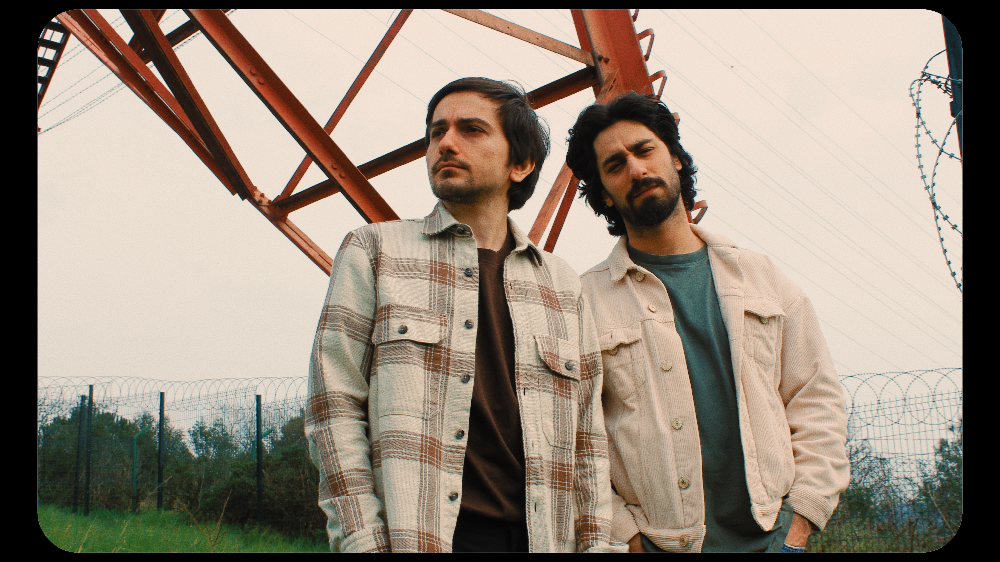

Dünyalar dönmüş eksenlerde 🪐
Dipriz, 2023 yılında Oğuz Takmaz ve Doğuhan Sakın tarafından kurulmuş psikedelik - alternatif rock grubudur. İstanbul merkezli olarak faaliyet gösteren ikili, kayıt süreçlerini tamamen kendi üretim altyapıları üzerinden ve bağımsız şekilde yürütmektedir.
| Albüm/EP | Yıl |
|---|---|
| Vertigo, Vol. 2 | 2025 |
| Vertigo, Vol. 1 | 2024 |
| Paranoya | 2024 |
| Psikoz | 2024 |
| Halüsinasyon | 2023 |